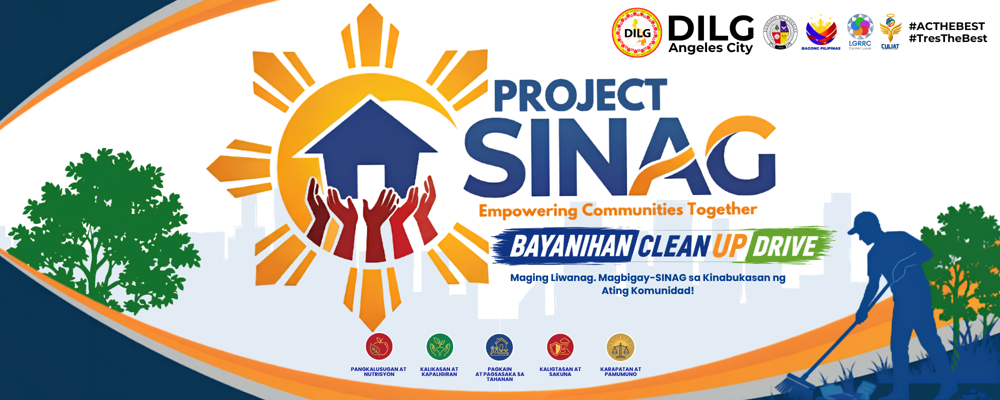

DILG Angeles City Community Initiative
Project SINAG
Empowering Communities Together
Strengthening active citizenry, discipline, and bayanihan by making grassroots communities active partners of the government.

Overview
Making communities active partners in local development.
Project SINAG intensifies the implementation of DILG programs and local government priority thrusts by empowering grassroots communities to participate in governance and sustainable development.
It promotes a culture of active citizenry, discipline, and bayanihan, encouraging residents to take ownership of their community’s progress while strengthening responsibility and national pride.
Focus Areas
Priority areas for a brighter, cleaner, and safer Angeles City.
SDG Action Guide
Simple actions every household and community can do.
Tap a goal to view practical household and community activities.
Community Voices
Testimonies from the Community
Stories and experiences from residents, volunteers, and partners who participated in Project SINAG activities.
How to Participate
Be part of the bayanihan movement.
Project SINAG works best when residents, families, youth groups, barangays, and local partners take small but consistent actions together.
Questions or updates?
Connect with Project SINAG through Facebook.
For event announcements, inquiries, coordination, and other concerns, visit the official Facebook page linked to this website.